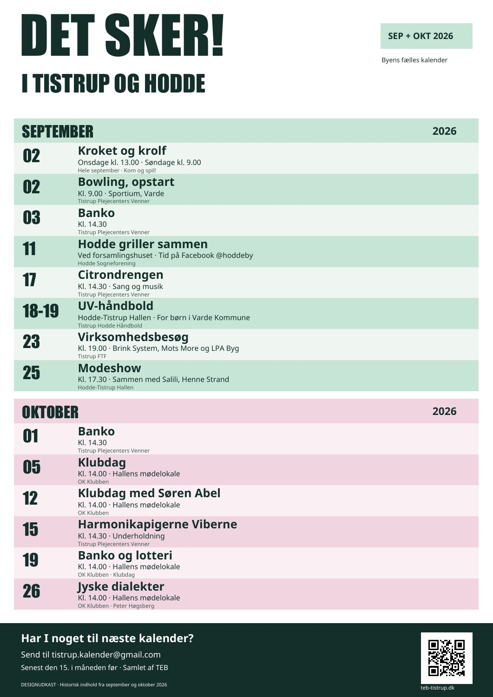

Jeg ville gå videre med nr. 1. Den har noget af den gamle plakats genkendelighed, med tydeligere datoer og mere ro i teksten.
Den store overskrift bliver. Hver måned får sin farve, og datoerne får deres egen kolonne. Let at finde næste arrangement på opslagstavlen.

Designudkast med de samme 14 historiske arrangementer som den gamle plakat. Teksten er forkortet til print. PDF'erne er A3 og kan også skaleres til en større plakat. QR-koden går til TEBs forside.
Godkendelse til netkalenderen og udvælgelse til papir skal være to forskellige beslutninger.
For eksempel september og oktober. Hent de godkendte arrangementer i perioden.
Markér med eller uden for printudgaven. Kontrollér dato, sted og tidspunkt.
Forkort printteksten, og saml gentagelser. Gennemse plakaten i den valgte skabelon.
Gem udgaven fast, når korrekturen er færdig. Senere netrettelser ændrer ikke den trykte udgave.
Dette er et forslag til printarbejdsgangen. Den særskilte udvælgelse af arrangementer til papir er endnu ikke bygget ind i kalenderen.